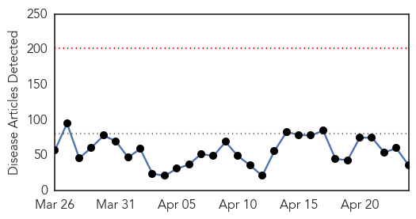
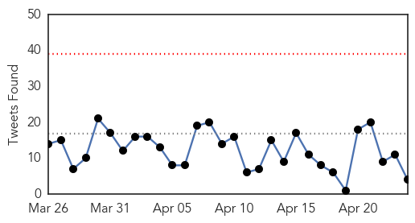
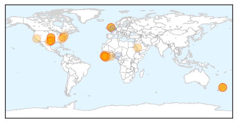
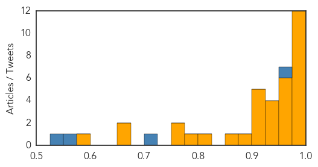

Ebola
30-Day Web Trend
0 alerts, 0 warnings

30-Day Twitter Trend
0 alerts, 0 warnings

Article Locations
Article Confidences
Top Articles:
- 1.000
- The Ebola Outbreak of 2013–2014
- 0.999
- Control Eluded State Leaders in Ebola Crisis
- 0.999
- Second health worker tests negative for Ebola
- 0.999
- Ebola Treatment Shows Promise in Monkey Study
- 0.999
- The Fight Against Ebola is More Hopeful Than Ever, But it's Not Over
- 0.997
- Ebola drug cures monkeys infected with West African virus strain
- 0.993
- Nurse tests negative for Ebola
- 0.991
- WHO Pledges to Rebuild Resilient Healthcare System in Liberia
- 0.991
- United Africans of the Berkshires to host fundraiser for Ebola fight
- 0.990
- Nelson nurse cleared of having Ebola
- 0.987
- W.H.O. alerts regional challenges
- 0.984
- African Union Commends Latest Financial Support in the Fight against Ebola worth $950 Million - Sierra Leone
- 0.974
- Make Charitable Donations Online, Sponsor a Child, Charity Fundraising, Help Children, Help Communities
- 0.967
- Improved blood systems in Ebola-affected countries expected to be positive outcome
- 0.965
- New Zealand worker tests negative for Ebola
- 0.962
- Ebola Virus One-Step Test Kits by LuSys Laboratories: Class I Recall
- 0.960
- Fiancee of Ebola victim hopes memoir closes chapter
- 0.955
- 10 Completely Crazy Conspiracy Theories About The CDC
- 0.947
- Ebola drug cures monkeys infected with virus
- 0.947
- Ebola scare saw cells at Burton Police Station placed into lockdown
- 0.939
- Ebola diaries: Creating ways to understand an outbreak
- 0.927
- ‘Breakthrough’ malaria vaccine developed, but only partially effective – scientists — RT UK
- 0.923
- AU Launches African Disease Control Centre
- 0.920
- Fiancee Of Dallas Ebola Victim Hopes Memoir Closes Chapter
- 0.917
- Malaria Makes No Laughing Matter of Mosquitoes
- 0.909
- Dallas Nurse Who Survived Ebola Visits College Station
- 0.908
- Fiancee of Ebola victim hopes memoir closes chapter
- 0.899
- Fiancee of Ebola victim hopes memoir closes chapter
- 0.871
- Sierra Leone: African Union Commends Latest Financial Support in the Fight against Ebola worth $950 Million
- 0.816
- The African CDC and WHO AFRO
- 0.784
- Sierra Leone’s mining industry moving on from Ebola « Awoko Newspaper
- 0.764
- Liberia's Ivorian refugees finally going home as Ebola ends
- 0.754
- PostBulletin.com
- 0.674
- Fiancee of Ebola victim hopes memoir closes chapter
- 0.669
- WHO's post-Ebola reforms substantive or window dressing?, Opinion News & Top Stories
- 0.588
- Gov’t Trains 3000 Additional Border Control Officers for UNMIL Drawdown
Top Tweets:
- 0.951
- Ebola diaries: Creating ways to understand an outbreak - World Health Organization http://t.co/PzBaTV3RCy ebola EVD
- 0.720
- RT: "Ebola drug [TKM-130803] cures monkeys infected with West African virus strain" - http://t.co/EteRoEEFRh
- 0.556
- WHO Africa Regional Director Praises Liberia's Response to Ebola Fight - All Africa http://t.co/ulcvPqM03k
- 0.526
- Liberian-Americans in Arlington helping Ebola survivors in Africa - Fort Worth Star Telegram http://t.co/gCYmxfOolM ebola EVD
Measles
30-Day Web Trend
0 alerts, 0 warnings

30-Day Twitter Trend
0 alerts, 0 warnings

Article Locations

Article Confidences

Top Articles:
- 0.983
- Doctor turns away new patients without measles vaccine
- 0.976
- News Scan for Apr 23, 2015
- 0.970
- Winnipeg woman contracted measles while travelling in Africa
- 0.964
- UNICEF, partners support mass vaccination campaign in Sudan --China Economic Net
- 0.945
- Immunization drive under way for 3 million children in Ebola-hit countries
- 0.940
- Manitoba's Second Case of Measles Reported
- 0.899
- Second case of measles reported
- 0.870
- In Our View: A Dose of Prevention
- 0.837
- Yemen: UN agency warns of deteriorating health situation amid ongoing fighting
- 0.809
- One child in five still not vaccinated, says WHO
- 0.725
- WHO promotes vaccination to eradicate measles
- 0.722
- Guest Column: Skepticism over vaccines a growing problem
- 0.703
- Adults urged to make sure they get anti-measles jabs as cases rise
- 0.683
- UN mulls sending staff back to Yemen
- 0.578
- Vietnam observes WHO Immunisation Week
- 0.559
- Progress towards global vaccination targets 'far off track'
Top Tweets:
-
No tweets found for Apr 24, 2015